Welcome to The Distraction Shield!
version 2.1.0
Team: Team Distraction Shield
Team Contact: distractionshield.devteam@gmail.com
The Team:
The Distraction Shield is a browser extension designed to help people make better use of their time and learn a new language. It takes advantage of our human nature that we are easily distracted by social media and other entertainment sites and turns the normal procrastination time into a productive language learning experience.
The core functionality of The Distraction Shield is to detect when the user visits a site that is he added on a blacklist, and will open a language exercise instead of the site. Once the user has completed the exercise, they will be free to continue onto the original site.
The learning experience can be personalized, among other things, by having an account on the Zeeguu platform, maintaining a blacklist of websites that will redirect to the learning platform and by customizing the time interval between two redirects.
In order to provide an overview of the Distraction Shield extension, in the appendix of the attached file there is a map of the modules that the application is using and their dependencies.
Each part of the map is explained with regards to the its dependencies.
The image can be viewed at a different scale by following this link :
Diagram of the module dependencies
https://drive.google.com/file/d/0B-uaz9aO7hIDa3AwUDF2aHdYWnM/view?usp=sharing
A diagram that shows the division of the files in the application and its is presented below :
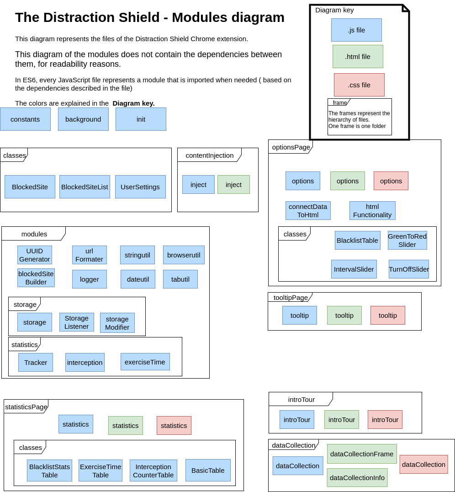
The extension is currently developed only for the Chrome web browser. This means that certain parts of the functionality are dependent on what chrome expects from an extension, and the api that is available to extensions in Chrome.
A Chrome-extension starts with a manifest file, where the main structure of the of the extension is defined. Also defined in the manifest are the main properties of the extension and the extensions meta-data such as name, version number, etc.
In the manifest, one or more background scripts or pages are defined. Everything defined as background is run on the background page, invisible to the user and having unlimited access to the chrome extension api. The limitation of the background page is that it has no access to the webpages the browser displays.
At this point content scripts come into play. Content scripts are scripts that are injected into web pages and therefore have the ability to interact with the pages the user of the extension visits and extending the reach of the extension to those pages.
It should be noted that, although content scripts are able to interact with the HTML part of web pages, they do not share resources with the javascript that is run on those pages. This means that interaction with those scripts functions and variables is not possible, and addition of functionality to the pages own functionality needs to be done by programmatically loading scripts in the page. Those scripts, although inserted by a content script, run like normal scripts and have access to variables and functions from other scripts on the page.
All this dictates the main structure of the extension’s code.
The exercises used to help the user spend their time on learning a new language come from the Zeeguu research project ( https://zeeguu.unibe.ch ). Zeeguu is a language learning platform that provides exercises based on your previous reading on different articles written in a foreign language. Currently a simple sample page with one exercise has been set up for the extension to use.
In order to make it easy for the user to access the options and statistics page, we made a tooltip page that is accessible by clicking on the extension’s icon.
Here the user can also add the current page into the blacklist, in order for him/her not to have to write the site in the options page.
In this page the user can customize his/her learning experience by choosing : the sites that should be in the blacklist, the mode, the time interval for intercepts or the option to turn off the extension for a certain time.
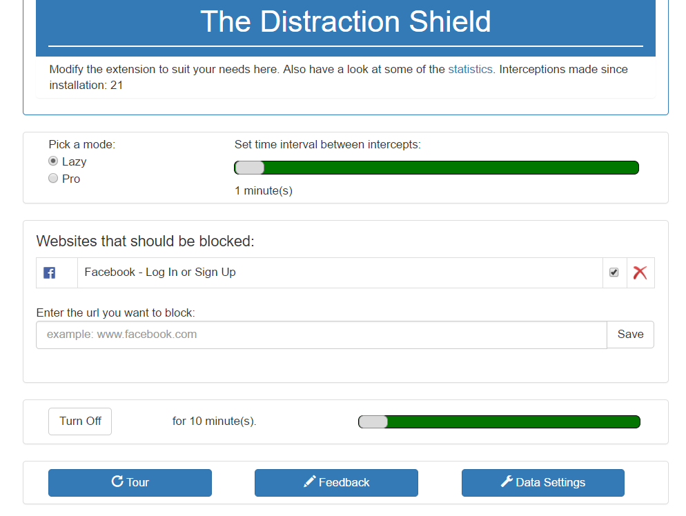
The user can define which sites have to be intercepted by the extension by adding or removing sites from a list (the blacklist). The sites can be temporarily disabled by unticking the box near the name of the site.
The user can choose the mode, Lazy or Pro.
The user can set a time interval between intercepts, which means that after finishing an exercise ( or after pressing the ‘Skip’ button from the Lazy mode) you can enter on sites that are on the blacklist without being intercepted for that certain amount of time.
Also, the user can set the time between redirections, which means that the extension will not intercept your browsing for that given time.
The user can access a dashboard with statistics based on: the number of times he/she was intercepted from a certain site and how much time was spent on this site. Also, the amount of time spent on exercises is being tracked.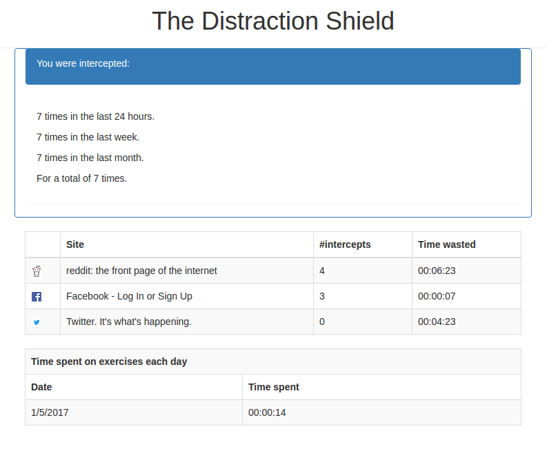
In order to enable users to provide feedback for the extensions, a form can be accessed from the options page.
In this form users can answer questions related to the :
Design of the application
How easy it is to use the application
New features that they would like
How they feel interacting with the application
The form is implemented as a Google form, and can be accessed through the following link : https://goo.gl/forms/e1u8uxBeDDezVfPG
When the user enters a site that is on the list of blocked sites, he/she is redirected to a language exercise. The page where the user is redirected looks like the following image. It should be noticed that in the lower part of the page, the user is presented with information about the reason of redirection and with the option button to Skip. The ‘Skip’ functionality is explained below.
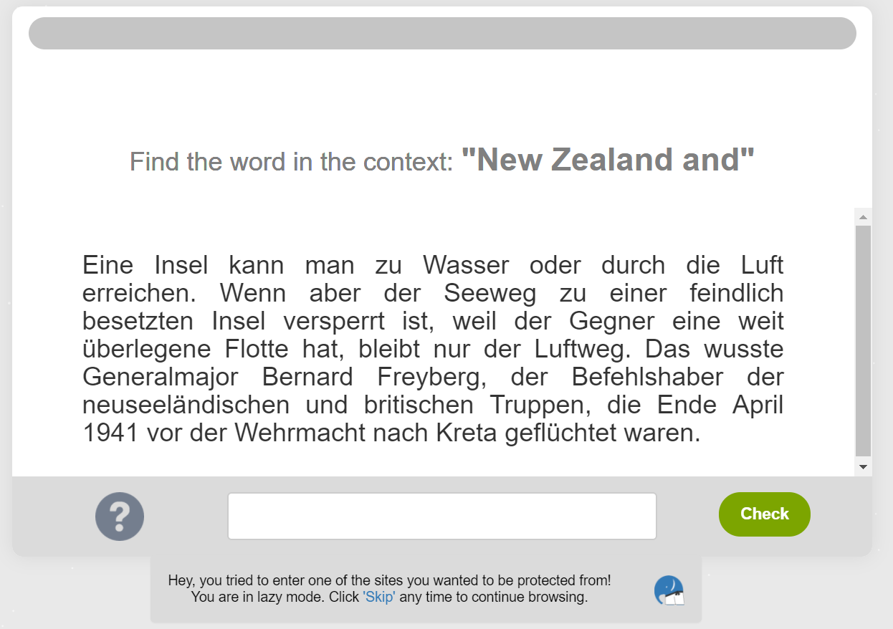
Here, the flow depends on the mode that the user previously selected:
when the extension is in “lazy” mode, the user has the opportunity to skip the exercise by pressing a button - “ Skip”.
when the extension is in “pro” mode, the user continues with the exercise, and at the end of the exercise they are presented with two possibilities: they can go back to the original destination or they can continue to do exercises. Clicking the “Take me away!” button will take the user to their original destination.
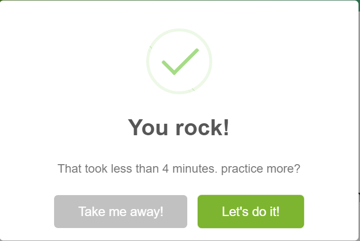
The redirection url is stored in the actual URL of the Zeeguu exercise. After the exercise is done, the user is redirected to that URL. It was decided to use this approach as the client provided us with the code of the Zeeguu platform. It was possible to change the Zeeguu platform code to make this work.
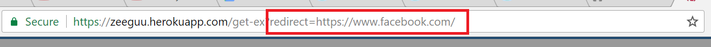
In our extension the background page relies on a single JavaScript file that takes care of initialization when the extension is first installed, and then puts a message listener for the URLs entered. If a URL is entered, the extension checks if the URL is in the black list. If it is, it is intercepted and the user is redirected to the page with a language exercise. The Chrome API’s greatly encourage the use of event-driven programming, therefore The Distraction Shield also implements this. In the background, the extension also tracks user statistics with respect to distractions and language exercises.
Using content scripts we inject JavaScript code into the Zeeguu exercise. This way, it is possible to inject a panel that tells the user that it was the extension that sent them there. This is currently possible in two modes: “lazy” and “pro”. The general sequence of actions that are taken when the extension is active is shown below (Step1 and Step2 diagrams).
The following diagram describes the user interaction with the extension in two steps.
In the first step, it is presented what happens when the user enters an URL in the browser. It is mentioned that the redirection happens if the entered URL is in the user’s blacklist and if the extension is enabled. This means that the extension is not turned off or disabled because the user recently solved an exercise. In the second step, it is presented what happens after the user is redirected to the Zeeguu page.
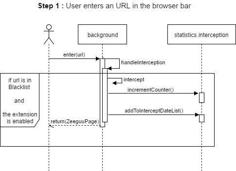
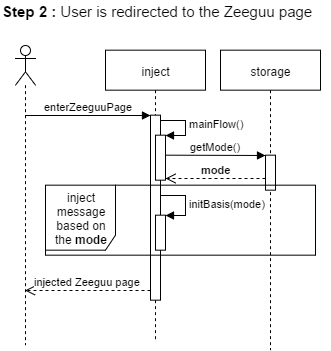
The Chrome Extension API provides a possibility to delegate the burden of storage to the browser, and at the same time allow the user to tie the stored data to their google account if they are logged in with one. This part of the Chrome Extension API is used to store statistics and the blacklist of sites.
The flow of the first utilization of the extension is presented below. After the user installs The Distraction Shield, the user is presented with the option of taking a tour that would explain the functionalities of the extension. Together with this all the data that is saved is initialized such that whenever there is a GET-request to the storage, data will not be ‘undefined’ nor will it be ‘NULL’.
Below is an SSD diagram, not of the first install, but of the user starting a new session. The installation is a rather dull SSD where we only initialize values that were not there before. This SSD will occur every time the user starts a new browsing session.
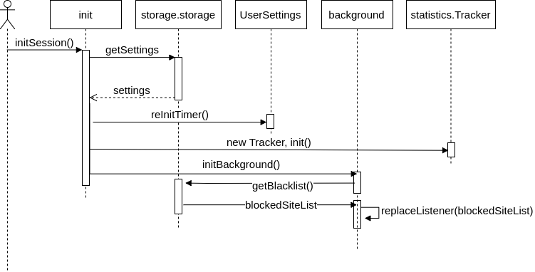
The login into the Zeeguu platform is handled by the platform itself. When the user is redirected to the language learning exercise, there are two options :
if the users are not logged in, they are presented with the login page of the Zeeguu platform. After this they will be presented with an exercise.
If the users are logged in, they are redirected to a Zeeguu exercise
Currently, the Chrome Extensions API is used for the functionality of the extension and JQuery UI for the visual aspects.
Languages :
JavaScript : for the functionality and control of the extension
HTML/ CSS : for the visual design ( the options pop-up)
Libraries:
JQuery
Bootstrap
Building tools:
Node : for module management
Bower: for package management
Broccoli: used for fast build
In order to merge the work of different groups, we met and explained each other’s code. Followed up by having a session of combining all functionalities so far which and make sure everything works properly. After every iteration, we refactored the code in order to incorporate all the feedback received.
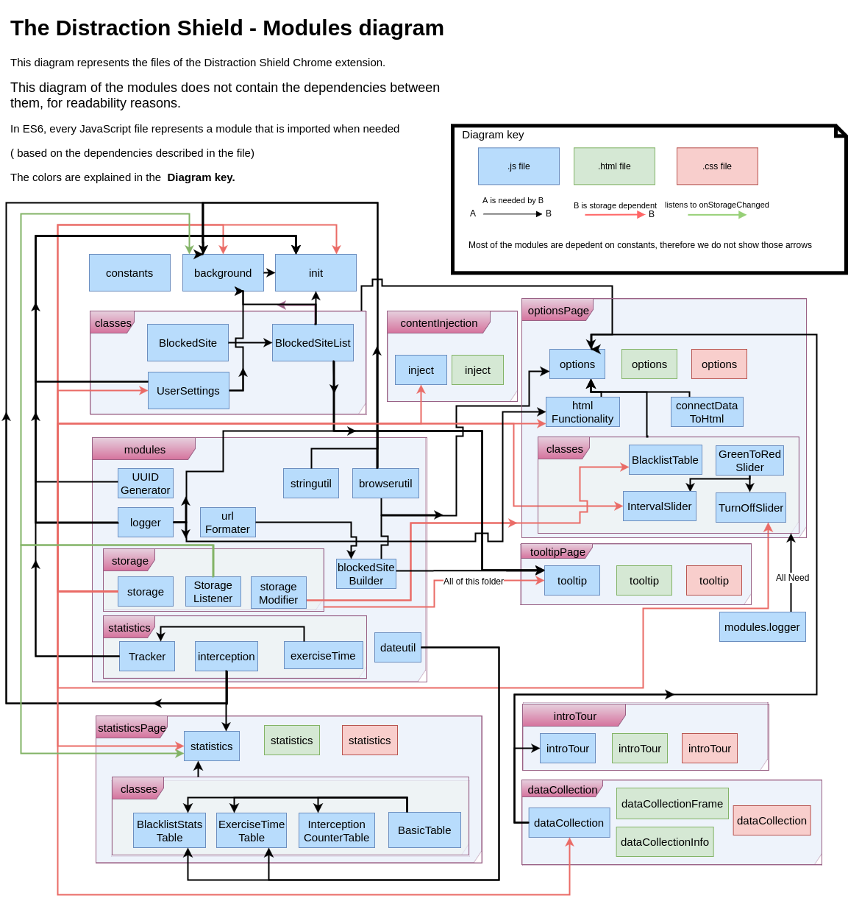
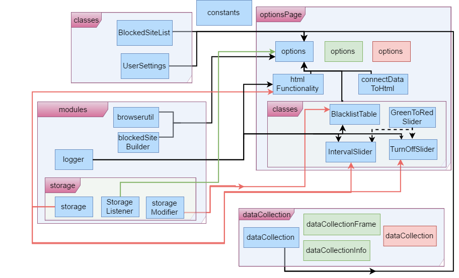
The options page is one of the core parts of the extension, therefore it is highly dependent of the other modules.
The classes are needed for the user settings and for the list with blocked sites.
Options page listens to the modification that are happening in the storage and updates the objects corresponding to that.
As we collect data about the modification in the user settings, the options page is dependent on the data collection.
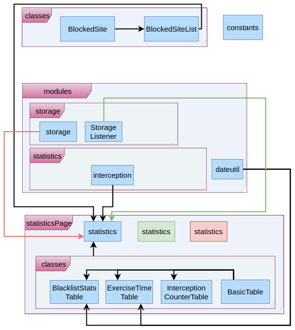
The Statistics page shows the user information about the :
Number of interceptions in different time periods ( per day, week, month, total number of intercepts) (InterceptionCounterTable)
A list of blocked sites and the amount of time the user spent on that site. (BlacklistStatsTable)
The amount of time a user spent doing exercises for each day. (ExerciseTimeTable)
The statistics listens to the changes made in storage in order to update all the information.
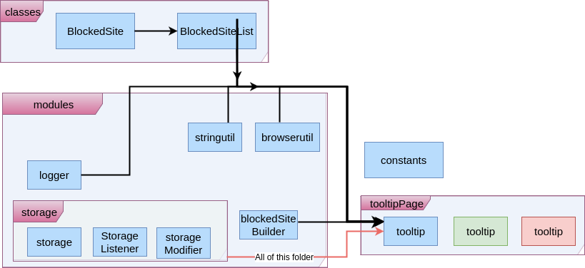
The tooltip page is of course very small and has a small amount of functionality therefore this diagram stays quite clean. It only has 3 functions:
Open the options-page
Open the statistics-page
Influence the Blacklist.
All dependencies are due to the functionality for this last function. It is because it has 3 functions in itself:
Add The current page to the Blacklist
Stop the interception of the current page (if it is in the blacklist)
Start the interception of the current page (if it is in the Blacklist and its interception is turned off)
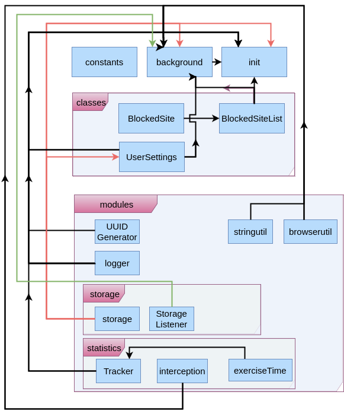
The background page is the script that always runs. This runs, as the name makes us suspect, in the background of chrome. You don’t see this, but this is essentially what makes the extension. It contains the webRequestListener and does the actual intercepting. Since all of this needs updating everytime the user changes something, there are a lot of dependecies on things like storage and classes. Since everything basically comes together through here we see a lot of dependecies.
| Who | When | Which section | What |
|---|---|---|---|
| Pieter, Elena | 08-03-17 | All | Created Doc |
| Pieter, Elena | 22-03-17 | All | Processed meeting notes, implement feedback |
| Elena | 10-04-17 | All | Implement feedback |
| Pieter | 01-05-2017 | Architectural Overview | Updated the intro of ‘the extension platform’ |
| Pieter | 01-05-2017 | Visual Design | Removed an obscure reference to the future |
| Pieter | 01-05-2017 | Architectural | Added to the background part of ‘Control’ |
| Elena | 15-05-2017 | Architectural | Added diagram of the module dependencies and two step diagram with user flow |
| Elena | 15-05-2017 | Visual | Updated images |
| Elena | 29-05-2017 | Architectural | Updated text based on feedback |
| Edser | 10-06-2017 | Architectural | Implement feedback on text |
| Edser | 11-06-2017 | Architectural | Fix diagrams and feedback on these |
| Elena | 11-06-2017 | Visual | Updated images |
| Elena, Edser | 12-06-2017 | Visual | Fix diagrams |